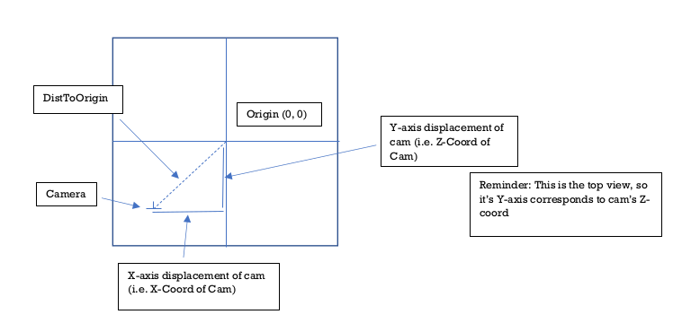
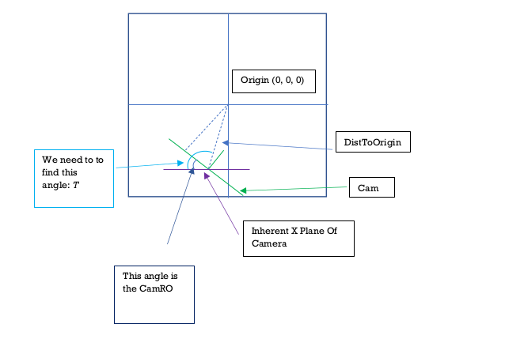
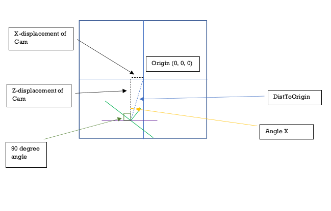

Step 1: Calculate Distance from Camera To Origin[0,0,0]
Use the Pythagorean theorem to find the distance from the camera to the origin[0,0,0].
The camera's coordinates will tell you how much the camera has displaced from the origin on each
axis. Eg: If the camCoords are [-4, 0, -2], this means it has displaced -4 on the X-axis and -2 on
the Z-axis.
So the vector that both of these individual displacements have created is the distance from the
camera to the origin. And we get that by calculating:
√((X-Displacement)2 + (Y-Displacement)2)
Note: Remember to keep in mind that since you're looking at things from the top view, the local
Y-axis of the top view corresponds to the
Z-axis of the actual 3D space.

Step 2: Calculate Angle Between CamXPlane and the DistToOrigin Vector
We now have the DistToOrigin vector. In order to eventually get Angle B, we can use the following
approach. Notice the
angle drawn in dark blue. This is the angle between CamXPlane and the current position of the camera
(rotation orientation wise).
This angle is clearly CamRO. It would be non existant if the CamRO was 0 since the cam would be
parallel with the CamXPlane. It's directly
proportional to the CamRO.
Now look at the angle drawn in light blue (Which we'll call Angle T). This is the angle between the
CamXPlane and the DistToOrigin vector. If we can find this angle, then we simply
have to substract CamRO from it and then we get Angle B.

Angle T forms a non-right angled triangle. So we can't use SOH CAH TOA. We'll have to get creative.
Let's revisit the displacement of the camera from the origin[0,0,0]. Dissect the displacement for
each axis.
Pretend you're holding a pen which is on the origin[0,0,0]. Now slide the pen left or right to track
the X-Axis displacement of the cam.
Then slide the pen up or down to track the Z-Axis displacement. Once you're done, STOP. The pen is
now on the camera. If you draw a line straight to the origin, you'll get the
DistToOrigin vector. But notice how we now have a right angled triangle? (The X-axis displacement,
Z-axis displacement and the DistToOrigin vector). Within that triangle we now
have an Angle X. We can easily find that out with Tan inverse. Tan(Angle X) = (X-Axis Displacement)
/ (Z-Axis Displacement).

Now notice how the angle between CamXPlane and the start of Angle X is 90 degrees? The start of Angle
X represents the Z-Axis line.
Which means if we add 90 degrees (which is PI/2 in radians) to Angle X, we can finally get Angle T.
Step 3: Get Angle B
Now to get Angle B, we just have to subtract CamRO from Angle T. And then we get the DV with the
equation we discussed in the beginning.
CamScreenDV = Cos(Angle B) * DistToOrigin;